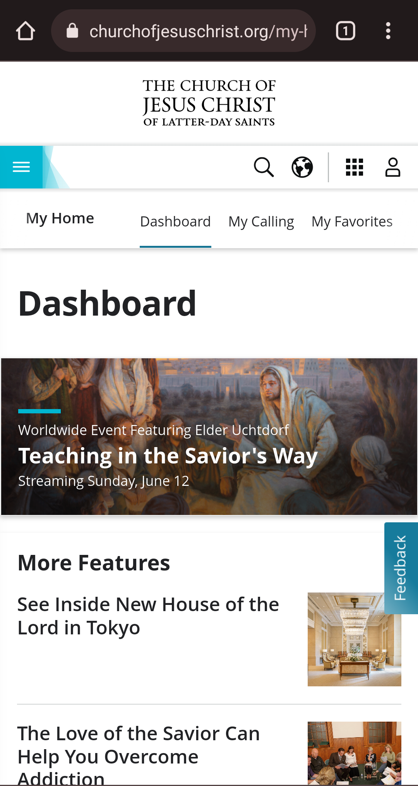
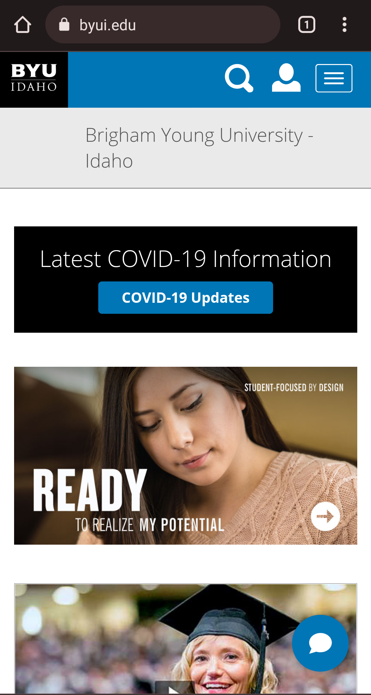
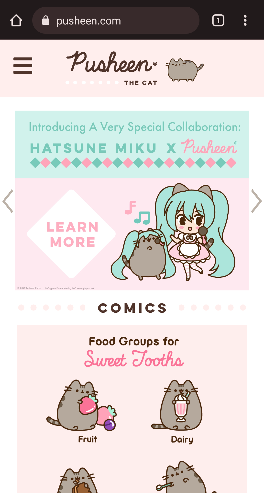

Rule of Thirds
Church of Jesus Christ of Latter Day Saints
www.churchofjesuschrist.org The Rule of thirds says that pyschologically our eye is more attracted to a 1/3 or 2/3 point on an image, meaning that if you cut an image into thirds the focal point is best places on the first or last line because it is pleasing to our eyes. I thought the church website was a great example of this because they have their story headlines and then a thumbnail using the rule of thirds.
Repetition
Brigham Young University - Idaho
www.byui.edu/ Even though the BYUI website on mobile isn't the most functional, the BYUI webdesigners certainly know how to stay on brand. Using repetition is extremely importaant to branding because it helps us recognize them. We all kno that byui blue color, and the website uses it all throughout the site, Along with the White letters, black backgrounds, and similar fonts to the byui logo.
Visual Hierarchy
Pusheen the Cat
https://pusheen.com/ Visual Heiarchy basically means when information/content is well organized so your eye knows what is the most important and knows where to go next. The Pusheen website is a great example of this as throughout the page it has images go from larger to smaller squares. The text on the banners also show us where to look first by being bolder, or in different more high contrast colors.